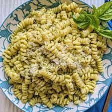

Pesto Pasta's Recipe

Description
Pesto is that wonderfully green sauce that offers a flavor that can best be described as bright and pungent, with a basil-forward, herbaceous garden aroma suspended with delicate olive oil, enriched with pine nuts (pinoli), and kicked into overdrive with Italian cheeses and garlic. It is served raw, requiring no heat to enhance the taste—instead allowing basil to step out from the shadows and into the spotlight.
Pasta pesto is therefore an easy but flavourful recipe that can be prepared in less than 30 minutes perfect for a quick but nice lunch
Ingredients:
- 7 ounce of Pasta of your choice
- 2 tablespoons of Olive oil
- ½ cup chopped onion
- 2 ½ tablespoons pesto
- 2 tablespoons grated Parmesan cheese
- Salt and Black pepper to taste
Steps:
- Fill a large pot with lightly salted water and bring to a rolling boil. Stir in pasta and return to a boil. Cook pasta uncovered, stirring occasionally, until tender yet firm to the bite, about 8 to 10 minutes. Drain and transfer into a large bowl.
- Meanwhile, heat oil in a frying pan over medium-low heat. Add onion; cook and stir until softened, about 3 minutes. Stir in pesto, salt, and pepper until warmed through.
- Add pesto mixture to hot pasta; stir in grated cheese and toss well to coat.
Your pasta is now ready to eat, Enjoy!
Return to main page
Lasagna's Recipe
Gnocchi's recipe